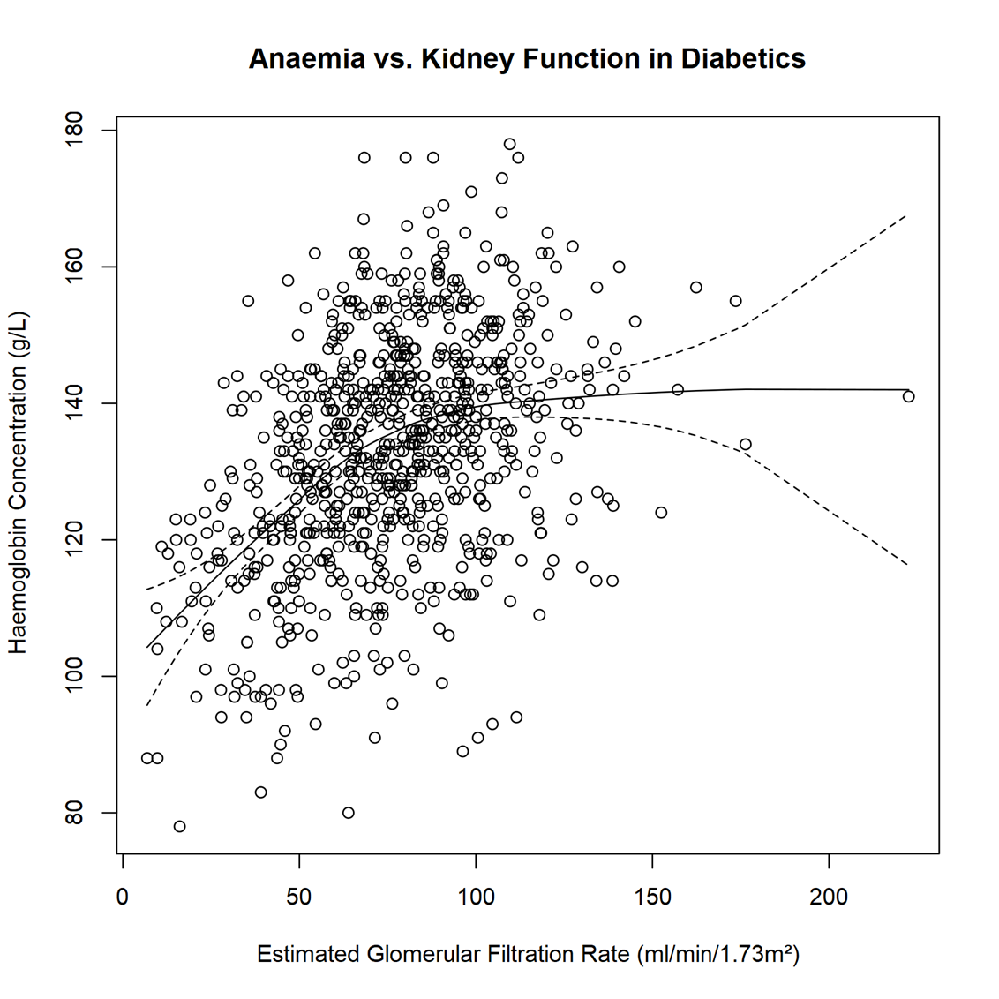

LOESS Curve Fitting (Local Polynomial Regression)
Menu location: Analysis_Nonparametric_LOESS.
This is a method for fitting a smooth curve between two variables, or fitting a smooth surface between an outcome and up to four predictor variables.
The procedure originated as LOWESS (LOcally WEighted Scatter-plot Smoother). Since then it has been extended as a modelling tool because it has some useful statistical properties (Cleveland et al., 1992).
This is a nonparametric method because the linearity assumptions of conventional regression methods have been relaxed. Instead of estimating parameters like m and c in y = mx +c, a nonparametric regression focuses on the fitted curve. The fitted points and their standard errors represent are estimated with respect to the whole curve rather than a particular estimate. So, the overall uncertainty is measured as how well the estimated curve fits the population curve.
It is called local regression because the fitting at say point x is weighted toward the data nearest to x. The distance from x that is considered near to it is controlled by the span setting, α.When α is less than 1 it represents the proportion of the data that is considered to be neighbouring x, and the weighting that is used is proportional to 1-(distance/maximum distance)^3)^3, which is known as tricubic.When α is greater than 1 all of the points are used and the maximum distance is taken as α^(1/p) times the observed maximum distance for p predictors. The default span is α = 0.75. If you choose a span that is too small then there will be insufficient data near x for an accurate fit, resulting in a large variance. If the span is too large than the regression will be over-smoothed, resulting in a loss of information, hence a large bias.
The trade-off between bias and variance also depends on the degree of the polynomial selected. A high degree will provide a better approximation of the population mean, so less bias, but there are more factors to consider in the model, resulting in greater variance. The default degree is 2 (quadratic). Higher degrees don't improve the fit much. The lower degree (i.e. 1, linear) has more bias but pulls back variance at the boundaries.
There is no substitute for thinking carefully about what you are plotting, testing different settings of span and polynomial degree, and selecting the most plausible fit by eye. The summary statistics also give an indication of how well the model fits.
The concept of degrees of freedom for nonparametric models is complex. They approximate the parametric concept of degrees of freedom empirically and result in numbers that are not necessarily integers.
The assumptions are:
- Around point x the mean of y can be approximated by a small class of parametric functions in polynomial regression.
- The errors in estimating y are independent and randomly distributed with a mean of zero.
- Bias and variance are traded off by the choices for the settings of span and degree of polynomial.
Technical Validation
The LOESS function in the {stats} package of R is called. You must have R installed on the computer from which you are running StatsDirect. You can download and install R here. The R implementation is based on the cloess algorithm, for which the original authors have a NETLIB site.
Example
Test workbook (Nonparametric worksheet: Hgb, eGFR).
The data are red blood cell concentrations (Hgb) and kidney function estimates (eGFR) taken from a cohort of type 2 diabetics. The hypothesis is that as diabetes causes chronic kidney disease patients become anaemic as their kidneys are sending less of a signal to their bone marrow to produce more red blood cells.
Open the test workbook using the file open function of the file menu. Then select LOESS from the Nonparametric section of the analysis menu. Select the columns marked "Hgb" and "eGFR" when prompted for outcome and predictor variables respectively.
Accept the default span of 0.75 and polynomial degree = 2. Check the box for the plot and edit the title and axis labels to "Anaemia vs. Kidney Function in Diabetics"; "Haemoglobin Concentration (g/L)" for the vertical axis; and "Estimated Glomerular Filtration Rate (ml/min/1.73m²)" for the horizontal axis.
For this example:
Hgb vs. eGFR
Number of Observations: 804
Polynomial degree: 2, Span: 0.75
Equivalent Number of Parameters: 5.464141
Residual Standard Error: 15.159968

This R code reproduces the example above, for which StatsDirect itself calls R. It needs no packages and was checked with R 4.6.1. Paste it into R, or save it as a script and run it.
# LOESS curve fitting: the StatsDirect help example (haemoglobin against kidney
# function in 804 people with type 2 diabetes) in R
# The data are the Hgb and eGFR columns of the Nonparametric worksheet of the
# StatsDirect test workbook.
d <- data.frame(
Hgb = c(141, 134, 155, 157, 142, 124, 152, 144, 160, 148, 125, 142, 114, 126,
146, 127, 157, 114, 149, 142, 144, 145, 116, 140, 136, 126, 163, 123, 144,
140, 137, 153, 132, 145, 160, 117, 143, 115, 162, 165, 150, 139, 155, 162,
121, 121, 135, 109, 141, 123, 146, 124, 138, 157, 133, 130, 148, 140, 153,
139, 152, 127, 142, 156, 154, 117, 146, 152, 144, 150, 153, 176, 94, 131,
140, 158, 160, 133, 148, 136, 132, 111, 178, 144, 141, 120, 136, 142, 143,
130, 137, 133, 161, 147, 145, 134, 145, 173, 143, 146, 168, 146, 161, 120,
152, 151, 146, 129, 135, 145, 137, 152, 150, 93, 151, 152, 118, 129, 146,
142, 152, 118, 114, 163, 139, 117, 137, 121, 125, 160, 151, 141, 120, 145,
142, 126, 133, 128, 150, 118, 126, 155, 91, 131, 146, 136, 138, 149, 135,
132, 112, 154, 171, 133, 112, 118, 136, 139, 142, 119, 140, 143, 147, 150,
146, 139, 155, 112, 143, 120, 141, 127, 165, 134, 156, 142, 155, 133, 154,
146, 89, 140, 129, 137, 146, 116, 135, 154, 144, 139, 157, 113, 143, 145,
126, 138, 143, 145, 143, 158, 131, 131, 147, 147, 136, 148, 146, 141, 133,
112, 126, 138, 158, 157, 139, 136, 127, 151, 151, 153, 132, 106, 155, 143,
139, 154, 156, 135, 141, 147, 129, 130, 162, 169, 163, 130, 121, 133, 99,
138, 123, 143, 148, 130, 155, 120, 139, 107, 113, 147, 135, 160, 136, 158,
159, 146, 119, 125, 132, 161, 159, 161, 155, 126, 141, 154, 131, 111, 122,
133, 165, 176, 137, 113, 140, 133, 168, 141, 125, 154, 138, 139, 130, 135,
142, 144, 131, 120, 136, 119, 144, 152, 136, 155, 135, 153, 125, 110, 130,
159, 124, 136, 131, 122, 133, 156, 157, 134, 141, 112, 132, 126, 139, 131,
141, 141, 154, 136, 155, 146, 116, 148, 134, 101, 130, 148, 122, 117, 134,
130, 135, 130, 128, 129, 128, 136, 144, 143, 134, 123, 153, 144, 142, 120,
145, 147, 149, 147, 166, 162, 176, 155, 128, 159, 148, 103, 123, 142, 147,
147, 156, 124, 135, 133, 130, 140, 124, 128, 112, 143, 129, 149, 126, 146,
147, 114, 137, 138, 125, 128, 133, 158, 144, 142, 142, 147, 144, 131, 152,
154, 147, 141, 147, 134, 131, 149, 144, 142, 127, 123, 149, 139, 96, 150,
139, 158, 141, 144, 129, 145, 128, 122, 151, 127, 134, 134, 124, 137, 113,
128, 123, 102, 129, 143, 155, 140, 133, 144, 134, 150, 142, 115, 147, 132,
122, 120, 154, 109, 129, 110, 119, 126, 159, 133, 131, 138, 117, 146, 101,
114, 140, 151, 155, 146, 132, 109, 142, 139, 143, 116, 129, 110, 128, 154,
131, 107, 91, 125, 103, 141, 142, 126, 123, 139, 118, 142, 113, 130, 131,
129, 159, 138, 140, 109, 132, 121, 141, 153, 176, 160, 124, 167, 143, 162,
121, 124, 119, 137, 127, 154, 159, 132, 119, 136, 114, 147, 132, 146, 147,
136, 141, 153, 124, 130, 134, 127, 110, 133, 155, 140, 109, 124, 162, 119,
100, 135, 103, 132, 129, 142, 145, 123, 140, 139, 131, 130, 155, 128, 120,
154, 155, 130, 135, 122, 144, 80, 142, 151, 139, 126, 112, 99, 137, 133,
146, 137, 141, 144, 145, 157, 102, 114, 150, 151, 137, 135, 122, 127, 121,
125, 135, 155, 115, 119, 143, 137, 148, 125, 136, 125, 124, 123, 142, 130,
150, 99, 134, 121, 139, 153, 122, 149, 139, 152, 143, 114, 114, 116, 124,
140, 117, 148, 139, 121, 118, 118, 127, 134, 129, 141, 136, 109, 125, 127,
131, 122, 142, 156, 117, 128, 128, 144, 144, 133, 117, 141, 101, 130, 122,
93, 145, 162, 121, 131, 126, 106, 145, 127, 141, 145, 110, 123, 115, 130,
121, 121, 130, 117, 129, 128, 138, 121, 121, 139, 134, 154, 129, 119, 141,
136, 143, 131, 134, 111, 132, 115, 129, 111, 131, 144, 150, 97, 107, 135,
126, 98, 138, 117, 124, 129, 114, 113, 133, 141, 114, 110, 121, 121, 106,
122, 120, 123, 116, 107, 158, 144, 135, 130, 92, 133, 130, 142, 137, 123,
105, 122, 122, 113, 145, 90, 133, 136, 138, 98, 108, 110, 88, 113, 131, 111,
120, 111, 143, 120, 96, 122, 123, 117, 144, 98, 135, 121, 122, 83, 97, 124,
116, 129, 127, 141, 97, 109, 121, 116, 115, 131, 100, 128, 118, 115, 155,
105, 105, 94, 98, 114, 141, 139, 113, 99, 120, 144, 97, 121, 101, 129, 139,
114, 130, 126, 143, 125, 117, 94, 98, 117, 122, 118, 128, 116, 106, 107,
121, 111, 101, 124, 118, 97, 113, 111, 120, 123, 108, 78, 116, 120, 123,
118, 108, 119, 88, 104, 110, 88),
eGFR = c(222.6, 176.4, 173.6, 162.4, 157.2, 152.5, 145.1, 142, 140.6, 139.6,
138.9, 138.8, 138.7, 137.4, 136.5, 134.4, 134.3, 134.1, 133.2, 132.2, 131.7,
131.6, 130.1, 129.1, 128.3, 128.3, 127.4, 127.1, 126.9, 126.2, 125.9, 125.5,
122.9, 122.8, 122.7, 121.9, 121.3, 120.6, 120.6, 120.3, 120.3, 119.5, 118.9,
118.6, 118.5, 118.3, 118.2, 118, 117.9, 117.6, 117.5, 117.5, 117.2, 116.9,
116.6, 116, 115.4, 115.2, 115, 114.4, 114.4, 113.9, 113.8, 113.4, 113.4,
112.9, 112.6, 112.6, 112.5, 112.2, 112.1, 112, 111.5, 111.4, 111.3, 110.9,
110.5, 110.2, 110.1, 110, 109.7, 109.7, 109.6, 109, 109, 108.9, 108.9,
108.7, 108.2, 108.1, 108.1, 108, 107.9, 107.9, 107.6, 107.6, 107.4, 107.4,
107.3, 107.3, 107.3, 106.9, 106.9, 106.5, 106.5, 106, 106, 106, 105.7,
105.3, 105.2, 105, 104.7, 104.7, 104.7, 104.3, 104.2, 104.1, 103.4, 103.3,
103.2, 103.1, 103.1, 102.9, 102.9, 102.8, 102.7, 102.5, 102.5, 102.2, 102.1,
102, 101.8, 101.7, 101.5, 101.3, 101.2, 101.2, 101.2, 100.9, 100.9, 100.8,
100.6, 100.5, 100.5, 100.1, 100, 99.7, 99.5, 99.2, 99.2, 98.8, 98.7, 98.7,
98.4, 98.3, 98.1, 98.1, 98, 97.9, 97.8, 97.8, 97.6, 97.6, 97.5, 97.4, 97.3,
97.1, 97.1, 97.1, 97.1, 97, 97, 97, 97, 96.7, 96.5, 96.5, 96.3, 96.3, 96.3,
96.2, 96.2, 96.2, 96.2, 96.1, 95.9, 95.9, 95.7, 95.5, 95.4, 95.4, 95.4,
95.1, 95, 95, 95, 95, 94.9, 94.9, 94.5, 94.4, 94.3, 94.3, 94.2, 94.1, 94.1,
94, 94, 93.9, 93.9, 93.8, 93.7, 93.5, 93.1, 93.1, 92.9, 92.7, 92.6, 92.4,
92.4, 92.3, 92.3, 92.1, 92.1, 91.9, 91.5, 91.4, 91.4, 91.1, 91, 90.8, 90.8,
90.8, 90.8, 90.8, 90.5, 90.5, 90.4, 90.4, 90.4, 90.4, 90.2, 89.9, 89.9,
89.9, 89.8, 89.7, 89.6, 89.6, 89.6, 89.6, 89.5, 89.5, 89.5, 89.3, 89.3,
89.2, 89, 88.9, 88.9, 88.9, 88.6, 88.5, 88.3, 88.2, 88.1, 88.1, 87.9, 87.9,
87.9, 87.9, 87.6, 87.1, 86.8, 86.7, 86.6, 86.6, 86.3, 86.3, 86, 85.8, 85.8,
85.8, 85.6, 85.4, 85.4, 85.3, 85.2, 85.1, 85.1, 84.9, 84.9, 84.7, 84.6,
84.5, 84.4, 84.4, 84.4, 84.2, 84.1, 84.1, 84.1, 83.9, 83.9, 83.9, 83.9,
83.8, 83.8, 83.7, 83.6, 83.6, 83.6, 83.5, 83.4, 83.3, 83.2, 83, 83, 82.8,
82.8, 82.8, 82.7, 82.3, 82.3, 82.2, 82.1, 82.1, 82.1, 82, 81.9, 81.9, 81.8,
81.8, 81.7, 81.7, 81.6, 81.5, 81.2, 81.1, 81.1, 81.1, 81, 80.8, 80.8, 80.7,
80.6, 80.5, 80.5, 80.3, 80.1, 80, 80, 79.9, 79.9, 79.8, 79.8, 79.8, 79.7,
79.7, 79.6, 79.5, 79.4, 79.4, 79.3, 79.3, 79.2, 79.2, 79.1, 78.9, 78.8,
78.7, 78.7, 78.7, 78.7, 78.6, 78.3, 78.3, 78.3, 78.3, 78.2, 78, 77.9, 77.9,
77.8, 77.7, 77.6, 77.6, 77.5, 77.5, 77.4, 77.3, 77.3, 77.3, 77.1, 76.9,
76.8, 76.8, 76.8, 76.6, 76.6, 76.5, 76.3, 76.3, 76.3, 76.1, 76, 75.7, 75.7,
75.7, 75.7, 75.7, 75.6, 75.5, 75.5, 75.4, 75.4, 75.2, 75.1, 75.1, 75, 74.9,
74.9, 74.9, 74.4, 74.4, 74.3, 74.2, 74.2, 74.1, 74, 73.9, 73.9, 73.8, 73.8,
73.7, 73.6, 73.6, 73.5, 73.5, 73.5, 73.5, 73.3, 73.3, 73.3, 73, 73, 72.8,
72.8, 72.8, 72.7, 72.7, 72.7, 72.5, 72.5, 72.4, 72.3, 72.3, 72.2, 72.2, 72,
72, 72, 71.8, 71.8, 71.6, 71.4, 71.2, 71.1, 70.9, 70.7, 70.6, 70.4, 70.3,
70.3, 70.1, 70.1, 70.1, 69.6, 69.4, 69.3, 69.2, 69, 69, 68.8, 68.8, 68.8,
68.6, 68.4, 68.4, 68.4, 68.2, 68.1, 68.1, 68.1, 68, 68, 67.8, 67.7, 67.7,
67.6, 67.5, 67.5, 67.4, 67.4, 67.3, 67.3, 67.1, 67, 67, 66.9, 66.8, 66.8,
66.8, 66.4, 66.3, 66.1, 66, 65.9, 65.8, 65.8, 65.8, 65.8, 65.5, 65.5, 65.5,
65.5, 65.5, 65.4, 65.3, 65.2, 65.2, 65.2, 65.2, 64.8, 64.7, 64.6, 64.3,
64.3, 64.3, 64.2, 64.1, 64, 64, 63.9, 63.9, 63.9, 63.8, 63.7, 63.5, 63.4,
63.3, 63.1, 63, 62.8, 62.8, 62.8, 62.6, 62.4, 62.4, 62.3, 62.2, 62.1, 62.1,
61.9, 61.7, 61.5, 61.4, 61.4, 61.3, 61.2, 61.1, 61.1, 61.1, 61, 60.8, 60.8,
60.7, 60.6, 60.6, 60.3, 60.3, 60.3, 60.2, 60, 59.9, 59.9, 59.8, 59.8, 59.5,
59.4, 59.3, 59.3, 59.2, 59.1, 59.1, 59, 58.8, 58.8, 58.6, 58.5, 58.2, 57.8,
57.8, 57.8, 57.7, 57.6, 57.6, 57.5, 57.4, 57.4, 57.2, 57.2, 57.1, 57, 57,
56.9, 56.8, 56.7, 56.6, 56.3, 56.2, 56.1, 56, 55.9, 55.9, 55.4, 55.1, 54.8,
54.6, 54.4, 54.4, 54.1, 54.1, 53.7, 53.5, 53.3, 53.2, 53.1, 53.1, 53.1,
52.9, 52.9, 52.9, 52.9, 52.9, 52.4, 52.4, 52.2, 52.2, 52.2, 52.2, 51.9,
51.8, 51.8, 51.8, 51.7, 51.4, 51.2, 50.9, 50.9, 50.6, 50, 49.9, 49.9, 49.9,
49.9, 49.9, 49.7, 49.7, 49.6, 49.5, 49.5, 49.3, 49.1, 49, 49, 48.8, 48.8,
48.8, 48.7, 48.4, 48.2, 47.9, 47.7, 47.7, 47.6, 47.5, 47.4, 47.3, 47.3,
47.1, 47.1, 46.9, 46.8, 46.8, 46.6, 46.3, 45.9, 45.7, 45.5, 45.5, 45.2,
45.2, 45.1, 44.8, 44.8, 44.7, 44.7, 44.7, 44.5, 44.3, 44.3, 44.2, 44.2,
44.1, 43.7, 43.7, 43.5, 43, 42.8, 42.7, 42.6, 42.5, 41.9, 41.7, 41.5, 40.9,
40.7, 40.5, 39.9, 39.7, 39.6, 39.1, 39.1, 38.7, 38.1, 38, 37.9, 37.7, 37.5,
37.4, 37.3, 37.3, 37.3, 36.1, 35.9, 35.9, 35.8, 35.6, 35.5, 35.2, 35.2, 35,
34.6, 34.4, 34.2, 33.6, 32.5, 32.5, 32.4, 32.4, 31.6, 31.5, 31.4, 31.1,
31.1, 30.7, 30.5, 29.1, 28.6, 28.1, 28, 27.9, 27.8, 27.1, 27, 26.8, 24.7,
24.5, 24.4, 24.2, 23.8, 23.5, 23.4, 23.3, 20.9, 20.8, 20.6, 19.5, 19.2,
19.1, 16.7, 16.1, 16, 15.1, 15, 12.8, 12.3, 11, 9.8, 9.8, 9.6, 6.9))
# StatsDirect fits this model by calling R itself, with the same function: a
# local polynomial of degree 2 over a span of 0.75 (both are R's defaults).
m <- loess(Hgb ~ eGFR, data = d, span = 0.75, degree = 2)
print(m)
cat("Number of Observations:", m$n, "\n")
cat(sprintf("Equivalent Number of Parameters: %.6f\n", m$enp))
cat(sprintf("Residual Standard Error: %.6f\n", m$s))
# The plot: the fitted curve with a 95% confidence band
p <- predict(m, se = TRUE)
i <- order(d$eGFR)
t95 <- qt(0.975, p$df)
plot(d$eGFR, d$Hgb, main = "Anaemia vs. Kidney Function in Diabetics",
xlab = "Estimated Glomerular Filtration Rate (ml/min/1.73m2)",
ylab = "Haemoglobin Concentration (g/L)")
lines(d$eGFR[i], p$fit[i], lwd = 2)
lines(d$eGFR[i], p$fit[i] - t95 * p$se.fit[i], lty = 2)
lines(d$eGFR[i], p$fit[i] + t95 * p$se.fit[i], lty = 2)